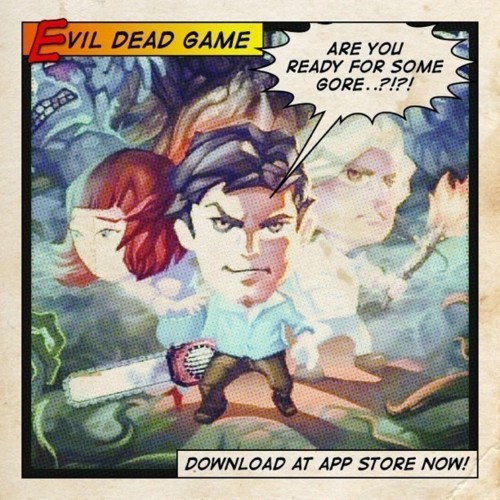

Tue, 07 Jun 2011 22:33:00 · evildead · games · iPhone · iPad
are you ready to whack some deadites get the

Are you ready to whack some Deadites?!?! Get the EVIL DEAD Game on iPhone and iPad.
Tue, 07 Jun 2011 22:33:00 · evildead · games · iPhone · iPad

Are you ready to whack some Deadites?!?! Get the EVIL DEAD Game on iPhone and iPad.